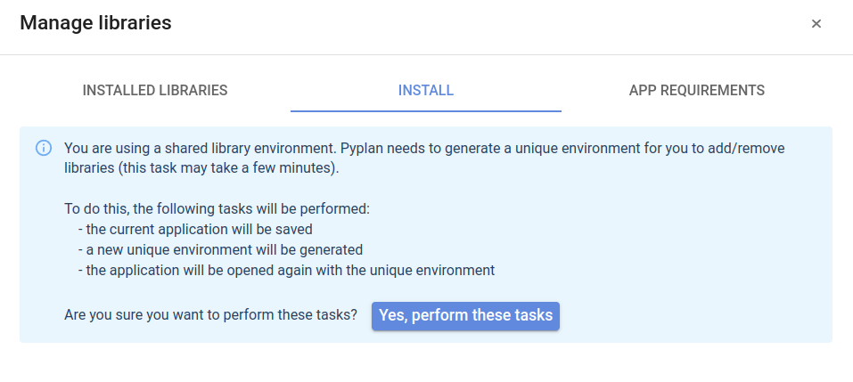
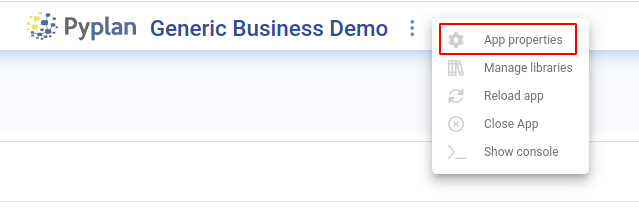

Virtual environments
Contents
Virtual environments#
Virtual environments are repositories where Python libraries used by an application are installed. Pyplan manages these virtual environments automatically, reloading them when an application is opened.
In Pyplan v3.3.1 or higher, virtual environments are individual per application. This allows each application to have its own set of libraries.
Operation#
Virtual environment repositories are stored in the .environments folder, either in the public space or in the user’s workspace.
Different scenarios:
An application is opened from the public workspace and the environment for this application does not exist yet: in this case the environment will be created when the application is opened. As this task may take a few minutes, you can view/hide the progress of the environment creation by clicking on the Show installation log/Hide installation log option.
An application is opened from the public workspace and the environment for this application already exists: the corresponding virtual environment is mounted, the library repository is compared with the libraries specified in the requirements.txt file, new libraries are installed if necessary.
An application is opened from the user’s workspace: if the environment corresponding to the application exists in the user’s workspace, this environment is mounted. If it does not exist, an attempt is made to mount the corresponding environment of the application from the public workspace. If it does not exist either, the environment is created in the user’s workspace.
In case 3 above (if the application is opened from the user’s workspace and the environment is mounted from the public workspace), if the user needs to make changes to the libraries, the following message will be displayed:
This indicates that in order to make changes (either by installing a library using the “pip install” tool or by modifying the requirements.txt file) the virtual environment must be created in the user’s workspace. This task is automatic and is started by clicking on the button: Yes, perform these tasks. This will take some time and then the user will be able to install the necessary libraries.
Tip
Perform this action only in case you need to add/modify libraries.
Installing libraries#
There are two ways to install libraries:
using the “Install” tab and type the name of the library to be installed
from the “App requirements” tab you can manually modify the requirements.txt file. This last option provides more control over the libraries needed by the application.
Basically, the set of libraries that an application needs is defined in the requirements file (requirements.txt). This file is automatically generated if the user removes a library from the “Installed libraries” tab or adds a new library using the “Install” tab.
Application identifier#
Each Pyplan application has a unique identifier that can be viewed by accessing the application properties option.

This identifier is generated when a new application is created and is used to identify the virtual environment associated with the application. It is therefore important to ensure that all versions of the same application have the same identifier, as well as that all different applications have their own identifier.
Tip
If you want to create a new application from another one, use the “create from” function. This ensures that a new unique identifier is generated for the application you are about to create.
Using environments for the first time#
If you are about to open an application that was created with a version prior to Pyplan 3.3.1, the application’s virtual environment will be created in the opening process. This process may take some time, depending on the libraries used by the application.